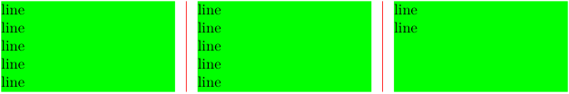

Contents
Summary
The command \setupmixedcolumns is used to setup “simple” (AKA “mixed”) multi-column layout.
Settings
| \setupmixedcolumns[...,...][...=...,...] | |
| [...,...] | name |
| grid | see \definegridsnapping |
| rulethickness | dimension |
| method | otr box |
| before | command |
| after | command |
| distance | dimension |
| n | number |
| maxheight | dimension |
| maxwidth | dimension |
| step | dimension |
| profile | name |
| align | see \setupalign |
| setups | name |
| balance | yes no |
| splitmethod | none fixed |
| alternative | local global |
| internalgrid | line halfline |
| separator | rule |
| strut | yes no |
| color | color |
| rulecolor | color |
| direction | normal reverse |
| ...=...,... | inherits from \setupframed |
| Option | Explanation | ||
|---|---|---|---|
| rulethickness |
|
||
| distance |
|
||
| n |
|
||
| balance |
|
||
| internalgrid |
|
||
| separator |
|
||
| rulecolor |
|
||
| direction |
|
||
Description
Examples
Background and separator
-
\setupcolumns [n=3, separator=rule,rulecolor=red, background=color,backgroundcolor=green, ] \startcolumns % 12 lines, please \dorecurse{12}{line\crlf} \stopcolumns
-

Balancing
-
\startcolumns[n=2,balance=no] \dorecurse{3}{\samplefile{ward}\par} \stopcolumns \hairline \startcolumns[n=2,balance=yes] \dorecurse{3}{\samplefile{ward}\par} \stopcolumns
Balancing doesn’t seem to work.